-400.jpg)
.jpg){kind=link}
Largest art museum in the United States. Its permanent collection contains over 2 million works, divided among 17 curatorial departments
General Information
Closed Tuesday and Wednesday
Closed September 13, Thanksgiving Day, December 25, January 1, and the first Monday in May
Seniors $17.00
Students $12.00
Members, Patrons, and children under 12 Free
The Metropolitan Museum of Art ("the Met") is the largest art museum in the United States, with more than 2 million works in 17 curatorial departments, at 1000 Fifth Avenue on Museum Mile at Central Park. Founded in 1870, its first Fifth Avenue building opened in 1872. Visitors come to see an encyclopedic collection that spans 5,000 years of world culture, from ancient Egyptian temples and Greek and Roman sculpture to European masters, American paintings, modern art, and arts from Africa, Asia, Oceania, and the Islamic world. The Met is large enough that most people choose a few galleries rather than try to see everything in one day, and the rooftop garden offers views of Central Park and the Manhattan skyline when it is open seasonally.
Egyptian Art
One of the most complete collections of Egyptian art outside Cairo covers the Paleolithic era through the Roman period. Highlights include royal sculpture, jewelry, coffins and mummies, and the tomb of Perneb, an Old Kingdom nobleman whose burial chamber is reassembled inside the galleries. The collection's centerpiece is the Temple of Dendur, described below.
Greek and Roman Art
Marble statues, bronzes, painted vases, gold jewelry, and wall paintings from Greece, Etruria, and Rome fill the Greek and Roman galleries, including the two-story Leon Levy and Shelby White Court. The collection runs from the Bronze Age Cycladic figures through the Roman Empire and includes frescoes from the villa at Boscoreale near Pompeii.
European Paintings
The European paintings galleries hold roughly 2,500 works from the 13th through early 20th centuries, with major holdings of Italian Renaissance, Dutch Golden Age, Spanish, French, and Impressionist art. The Met owns more paintings by Johannes Vermeer than any other museum in the world, as well as works by Rembrandt, Caravaggio, El Greco, Velázquez, Monet, Degas, Cézanne, and Van Gogh.
The American Wing
The American Wing displays paintings, sculpture, furniture, silver, glass, and decorative arts from the colonial era to the early 20th century. Period rooms, including a Frank Lloyd Wright living room from the Little house in Minnesota, show how Americans lived across several centuries, and the Charles Engelhard Court displays monumental sculpture and Tiffany stained glass.
Modern and Contemporary Art
Cubism, Surrealism, Abstract Expressionism, and Pop Art are represented by artists such as Pablo Picasso, Henri Matisse, Jackson Pollock, Willem de Kooning, and Andy Warhol. The collection also continues into the present through ongoing acquisitions of contemporary work, and special exhibitions often highlight living artists.
Asian Art
With more than 35,000 objects, the Asian Art department covers 4,000 years of art from China, Japan, Korea, India, the Himalayas, and Southeast Asia. Highlights include Chinese paintings and calligraphy, Japanese screens and samurai armor, Buddhist and Hindu sculpture, and the Astor Court, a Ming-style garden courtyard built by Chinese craftsmen.
Islamic Art
The galleries for the art of Islamic cultures from Spain to South Asia present ceramics, textiles, metalwork, manuscripts, carpets, glass, and architectural elements spanning the 7th through 19th centuries. A reassembled Moroccan court and an 18th-century Damascus reception room are among the architectural highlights.
Arts of Africa, Oceania, and the Americas
The Michael C. Rockefeller Wing displays sculpture, masks, textiles, ceremonial objects, and gold work from sub-Saharan Africa, the Pacific Islands, and ancient and Indigenous cultures of North, Central, and South America. Notable pieces include Benin court art from West Africa, carved Asmat memorial poles from New Guinea, and Andean and Mesoamerican gold and ceramics.
Medieval Art and The Cloisters
The medieval galleries on Fifth Avenue present Byzantine, early Christian, and European medieval art, including stained glass, ivories, enamels, and illuminated manuscripts. The Met also operates The Cloisters in Fort Tryon Park in upper Manhattan, a branch museum built from pieces of medieval European monasteries that is devoted to medieval art and gardens, including the Unicorn Tapestries. Admission to the Met includes same-day entry to The Cloisters.
Other Collections
Additional departments include European Sculpture and Decorative Arts, Arms and Armor, Musical Instruments, Drawings and Prints, Photographs, Ancient Near Eastern Art, and the Robert Lehman Collection. The Costume Institute holds one of the world's largest fashion collections and stages a popular annual exhibition, whose opening is marked by the Met Gala fundraiser.
World-Renowned Works
Many of the Met's best-known pieces draw crowds. A few that visitors often seek out are:
- Temple of Dendur: an Egyptian temple built around 15 BC under the Roman emperor Augustus, given to the United States by Egypt in 1965 and reassembled in the Sackler Wing beside a reflecting pool
- Washington Crossing the Delaware (1851): the monumental painting by German-American artist Emanuel Leutze in the American Wing
- Madame X (1883-84): John Singer Sargent's portrait of Virginie Amélie Avegno Gautreau
- Young Woman with a Water Pitcher (c. 1662): one of the Met's Vermeer paintings
- Aristotle with a Bust of Homer (1653): Rembrandt's meditative portrait
- Wheat Field with Cypresses (1889): one of Vincent van Gogh's cypress paintings
- Autumn Rhythm (Number 30) (1950): Jackson Pollock's large drip painting
This article uses material from the Wikipedia article "Metropolitan Museum of Art" and the Wikipedia articles "The Cloisters" and "Temple of Dendur", which is released under the Creative Commons Attribution-Share-Alike License 3.0
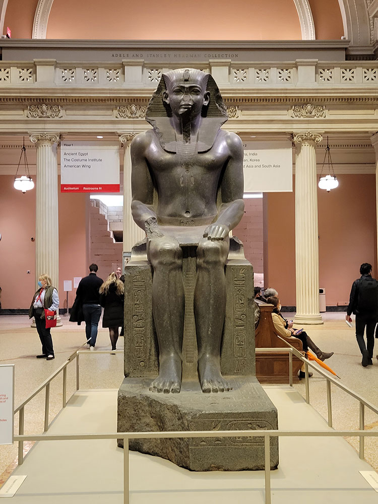
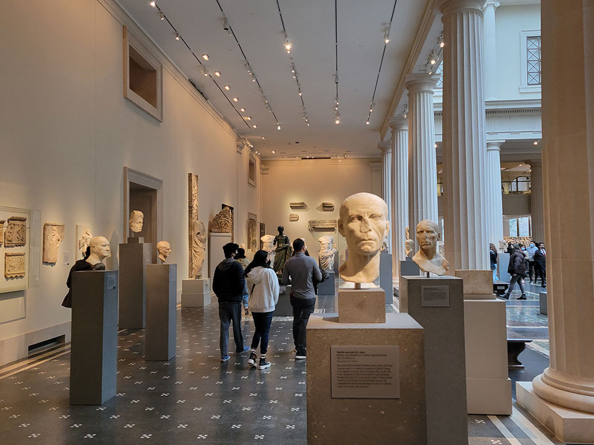
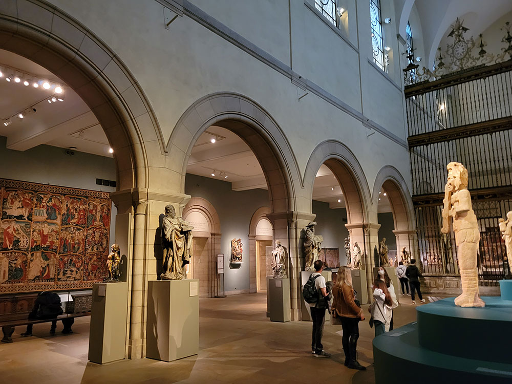
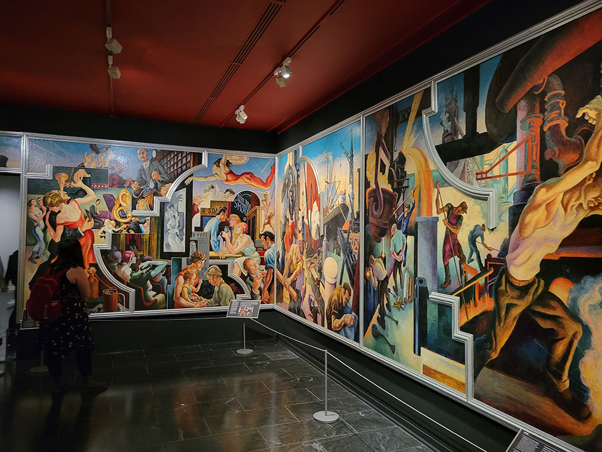
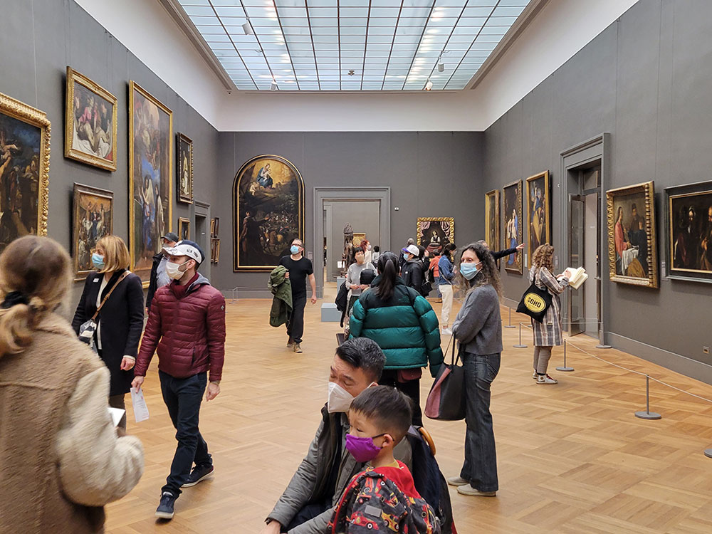
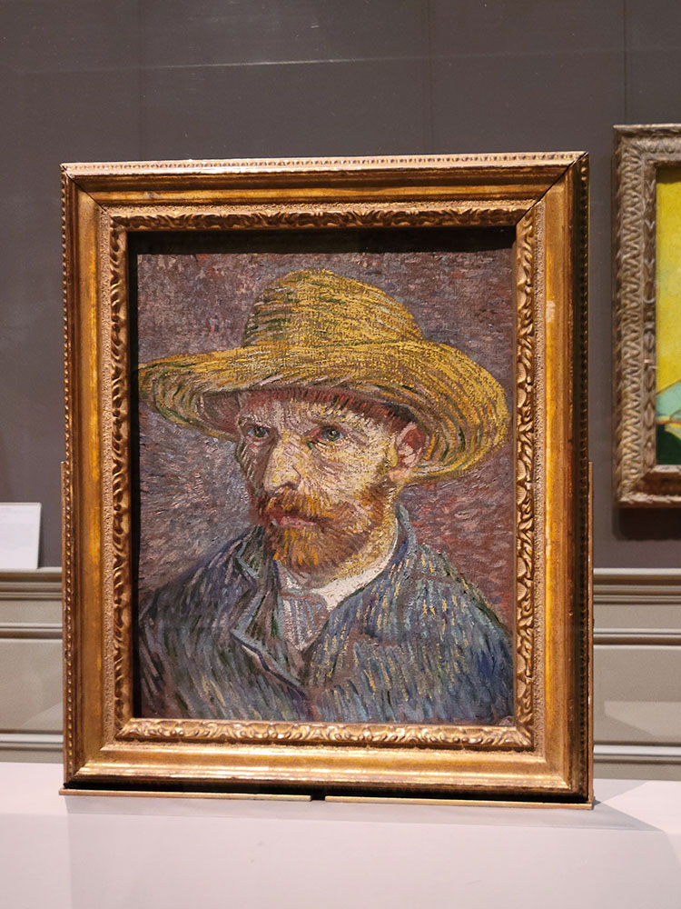
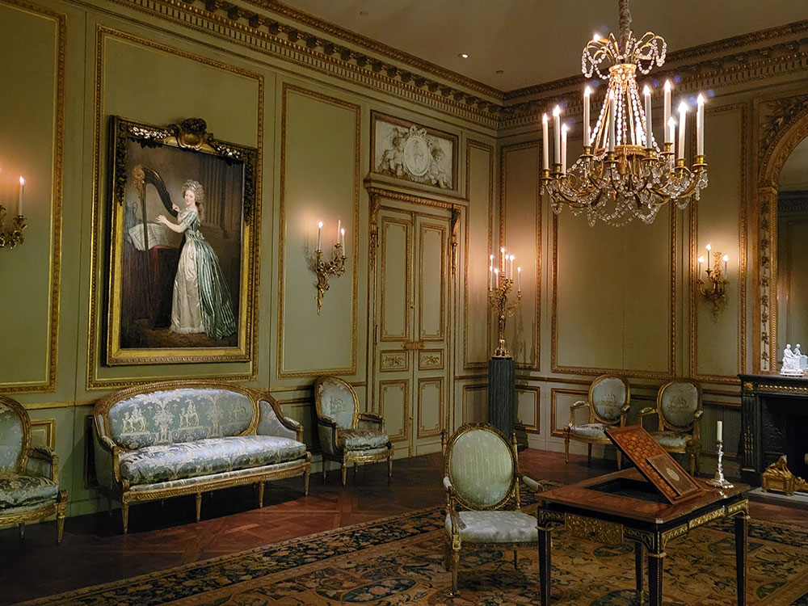
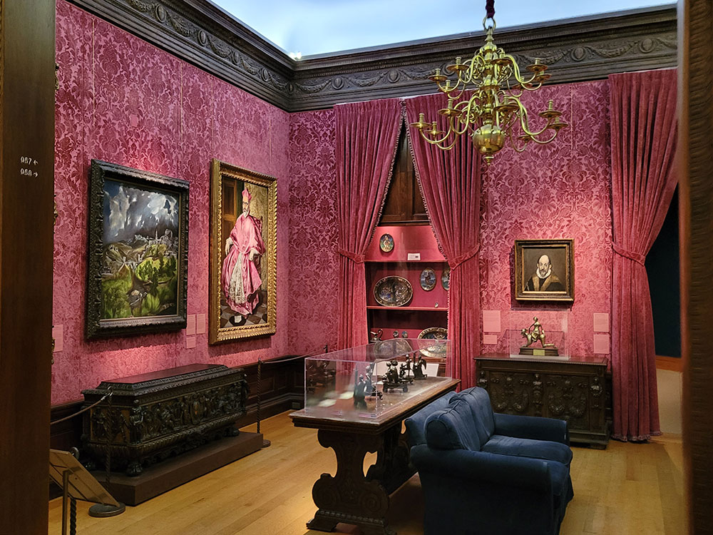
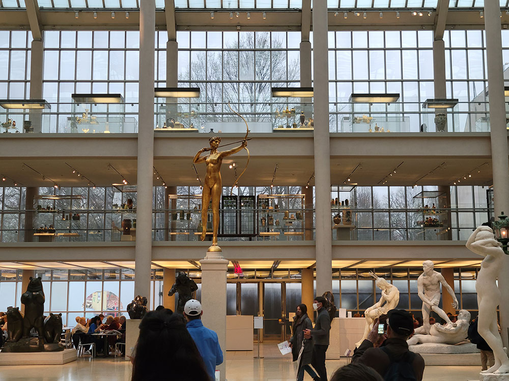
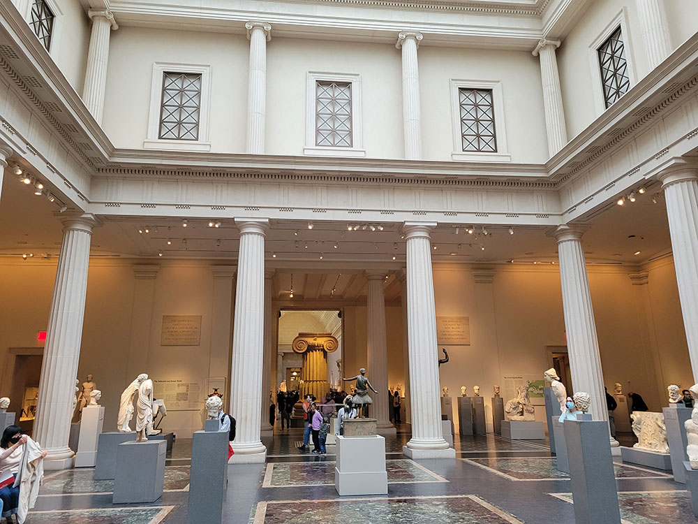
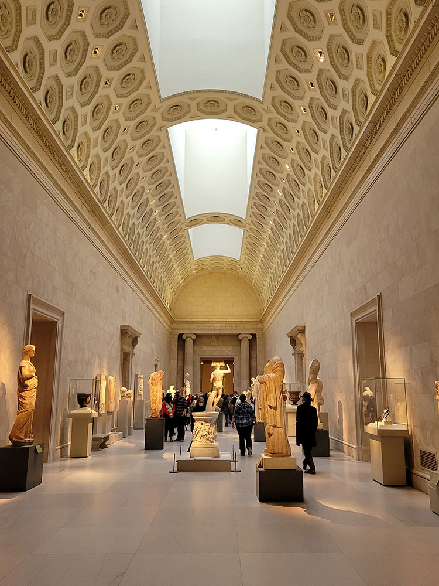
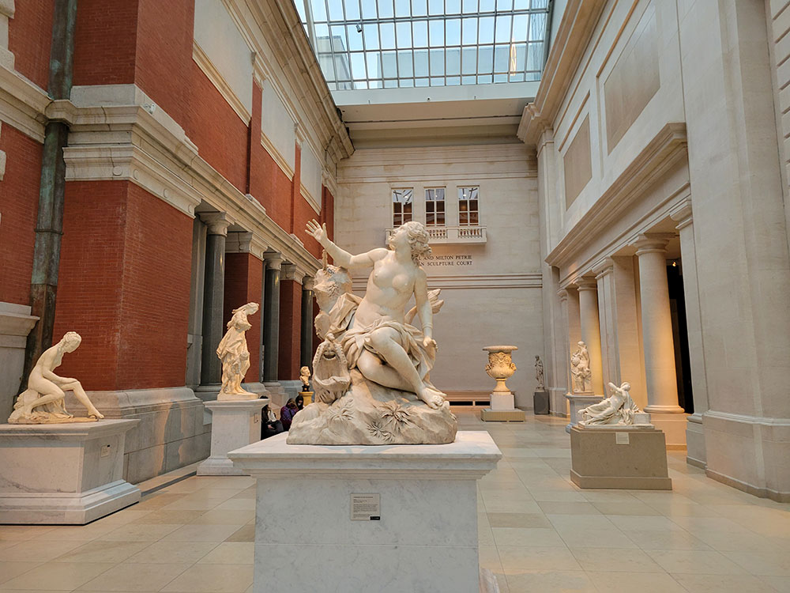
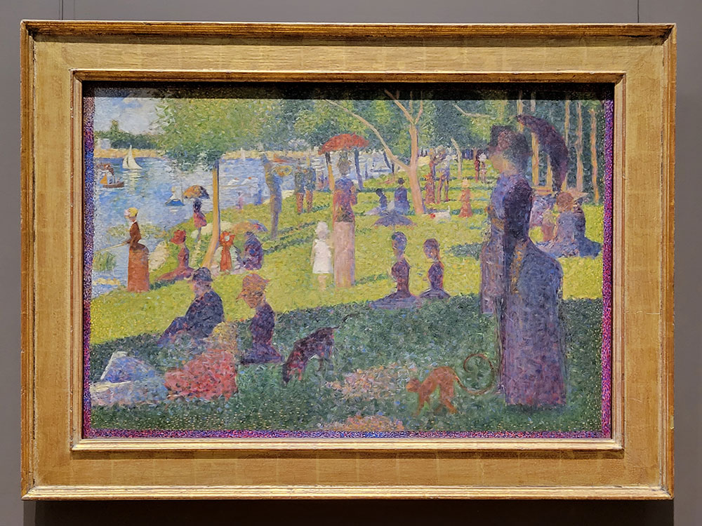
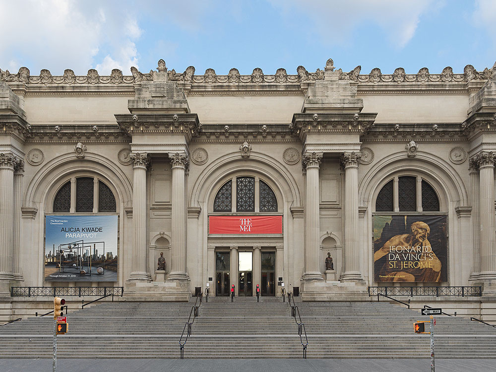
Hugo Schneider, CC BY-SA 2.0, via Wikimedia Commons; Image Size Adjusted_-_Central_Park,_NYC.jpg){kind=link}